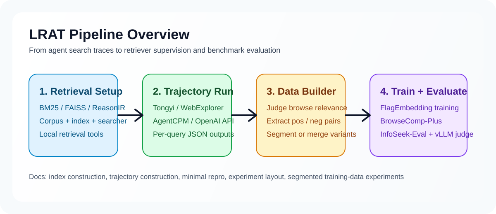

26,482
Valid agent trajectories
LRAT trains retrieval models directly from multi-step search-agent trajectories. Instead of relying on human click logs, it mines supervision from agent search, browsing, and post-browse reasoning traces to build retrievers aligned with agentic search.
Retrieval systems have traditionally been optimized for human users. In agentic search, retrieval is instead consumed by search agents that issue intermediate queries, inspect snippets, browse documents, and continue reasoning over evidence.
LRAT addresses this mismatch by learning directly from agent trajectories. It treats trajectories as the agent-era counterpart of user interaction logs and turns them into high-quality supervision for dense retriever training.
Browsed documents after search steps become positive candidates.
Unbrowsed retrieved documents serve as reliable negatives without human-style position bias correction.
Post-browse reasoning traces refine positives and induce soft relevance weights.
Generate long-horizon trajectories from a search agent over InfoSeekQA with local retrieval systems.
Use browse actions as coarse positives, unbrowsed items as negatives, and post-browse reasoning to filter noise.
Convert reasoning length into a soft utility weight and optimize a dense retriever with weighted contrastive learning.

Trajectory-trained dense retriever built on Qwen3-Embedding-0.6B and optimized for agentic search.
Open checkpointTrajectory-trained dense retriever built on multilingual-e5-large-instruct for agent-aligned retrieval.
Open checkpointTraining data constructed from deep research agent trajectories with reasoning-aware filtering and weighting.
Open datasetLRAT consistently improves end-to-end success rate and evidence recall across AgentCPM-Explore, WebExplore, Tongyi-DeepResearch, GPT-OSS, MiniMax-M2.1, and GLM-4.7.
The multilingual-E5 variant also yields consistent gains across diverse agent backbones, showing that LRAT is not tied to a single embedding architecture.
| Retriever setting | Agent | InfoSeek-Eval SR | BrowseComp-Plus SR | BrowseComp-Plus Recall |
|---|---|---|---|---|
| Qwen3-Emb | Tongyi-DeepResearch | 52.7 -> 68.0 | 17.8 -> 23.7 | 49.2 -> 60.7 |
| Qwen3-Emb | MiniMax-M2.1 | 58.7 -> 78.3 | 38.2 -> 48.3 | 57.2 -> 69.2 |
| E5-Large | Tongyi-DeepResearch | 56.7 -> 68.0 | 20.7 -> 23.9 | 54.8 -> 61.8 |
| E5-Large | GLM-4.7 | 73.7 -> 81.7 | 46.4 -> 50.6 | 68.7 -> 76.3 |
Information retrieval systems have historically been trained for human users, but modern search is increasingly carried out by large language model agents. LRAT formalizes learning to retrieve from agent trajectories as a new training paradigm, where supervision is mined from multi-step agent interactions rather than human click logs. Through systematic analysis, LRAT identifies browsing actions, unbrowsed rejections, and post-browse reasoning traces as reliable signals of document utility. It then uses these signals to construct high-quality query-document supervision and train dense retrievers with relevance-aware weighting. Experiments on both InfoSeek-Eval and BrowseComp-Plus show consistent improvements in evidence recall, end-to-end task success, and execution efficiency across diverse agents and retriever backbones.
@misc{lrat2026,
title = {Learning to Retrieve from Agent Trajectories},
author = {TODO},
year = {2026},
howpublished = {Manuscript in preparation},
note = {Project page, checkpoint, dataset, and arXiv link will be released later}
}